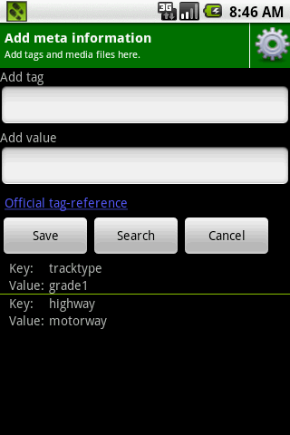
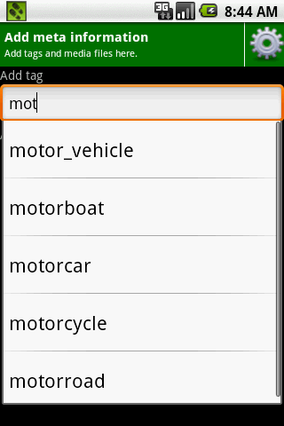

This screen will let you enter or edit tags.
This should be what you see upon entering this activity:
The advanced user can begin to type the tag and value to the corresponding input fields which are labeled tag and value.
TraceBooks assists you via an auto-complete in case you forgot a tag name or value name. As soon as you begin to input characters it will show you possible official OpenStreeetMap tag.
Like here:
You are not bounded to official tags. New tag value pairs can be also added. After you selected your tag and value you can added to your point by pressing the "Save" button. An can repeat adding tags by pressing the "Add" button in the previous dialog.
Some times it can happen that you do not exactly know which tag you can use for your point of interest. In this case you can perform a full text search based on the wiki description of tag value pairs of the OpenStreetMap wiki page.
Press on the search button to go to the FullTextSearch dialog.